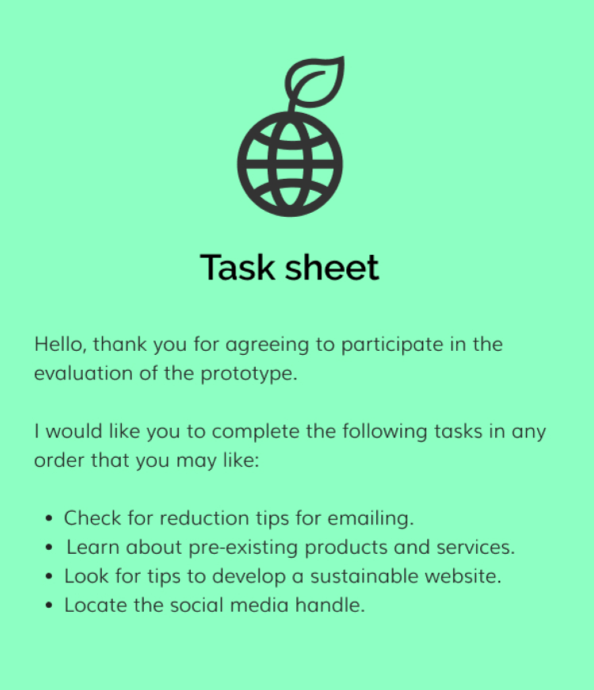
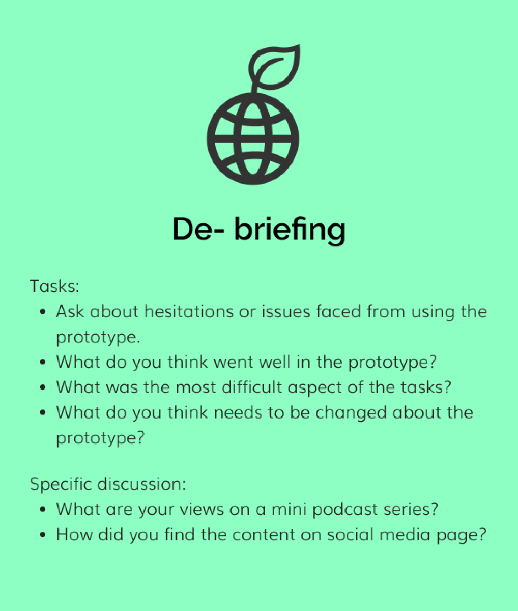
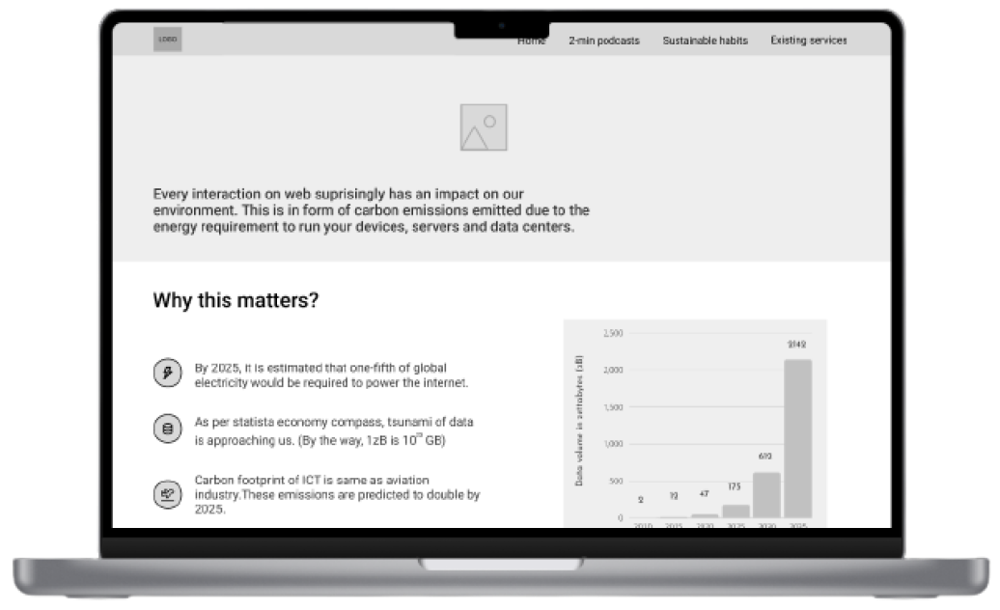
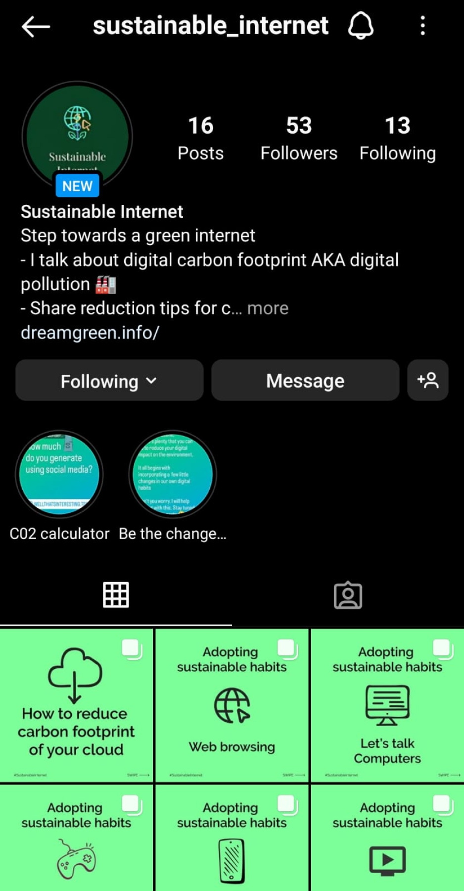
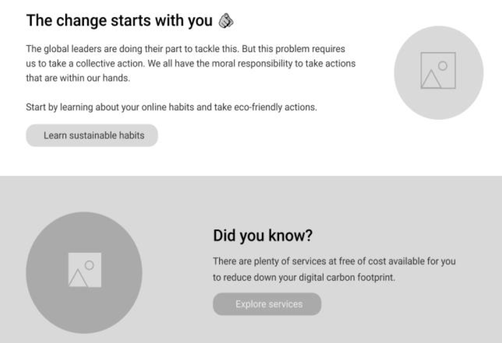
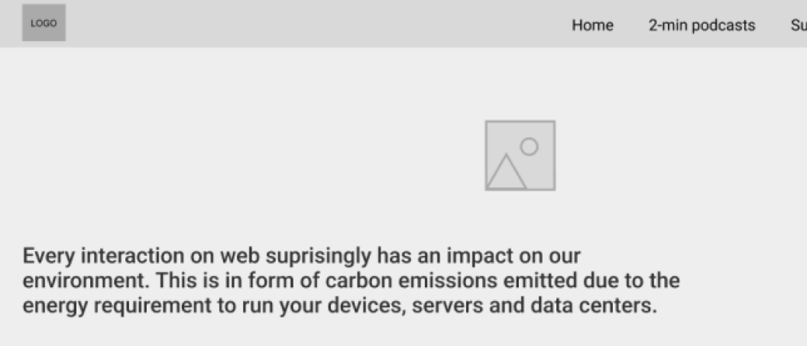
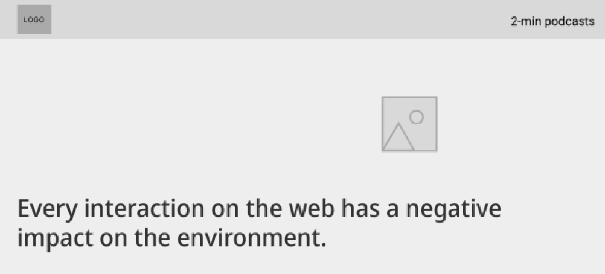

The automotive industry stands at a critical crossroads where autonomous technology promises revolutionary changes, yet the path to Level 5 autonomy remains complex and challenging. Many industry leaders harbor misconceptions that achieving full autonomy is merely a matter of incremental software updates, overlooking the intricate web of technological, infrastructural, and regulatory requirements that must align perfectly.
project brief
Role - Business Analyst
Tools - - Lucidchart, Microsoft Excel, JIRA
Timeline - 1 month
Key deliverables - Market Analysis & Competitor Research ,Stakeholder Interviews ,Gap Analysis Report ,Business Requirements Documentation ,Process Flow Diagrams ,Data Analysis & Insights ,Financial Modeling ,Risk Assessment Matrix ,Strategic Recommendations ,ROI Projections for Acquisition ,Implementation Roadmap ,KPI Framework Development.
Business goal
Our primary focus on market leadership drives us to accelerate our entry into the Esperanto market, positioning SparkSwift at the forefront of bridging the technological gap between Level 4 and Level 5 autonomy. By establishing a first-mover advantage in full autonomy solutions, we aim to capture significant market share in this emerging sector.
We will achieve operational excellence by optimizing our manufacturing capabilities through a dual approach of leveraging existing facilities while strategically building new ones. This will be complemented by integrating and adapting AI training models to meet diverse regional requirements, ensuring our product development cycles are streamlined for faster time-to-market.
The strategic integration plan focuses on harmonizing technological capabilities between both companies while ensuring seamless integration of AutoSynth's advanced EV technology. This integration will be carefully managed to maintain financial stability as we scale operations across different markets
Our market adaptation strategy emphasizes developing region-specific solutions that address both Asian and European market needs, while creating scalable pricing strategies for different market segments. Through technological differentiation, we aim to build sustainable competitive advantages that will secure our long-term market position.

methodology
i)Market Analysis
Mapped regional adoption patterns across 8 Asian and 12 European markets, identifying 35% higher early adoption rates in Esperanto compared to similar markets, with 40% lower regulatory barriers for Level 5 implementation.
Performed gap analysis between Level 4 and Level 5 technologies across 20+ parameters, revealing AutoSynth's capabilities could reduce development timeline by 45% and potentially save $120M in R&D costs.
technical feasibility
Conducted technical audit of AutoSynth's 8 core technologies, identifying 89% compatibility with SparkSwift's existing systems and potential to accelerate Level 5 development by 18 months.
Assessed 5 manufacturing facilities, determining 2 existing plants can be retrofitted for 30% cost savings, while 1 new facility would increase production capacity by 150% within 12 months.
Analyzed data processing capabilities across 3 regions, revealing potential for 75% faster training cycles by combining both companies' datasets (1.2M hours of driving data).
risk assessment
Evaluated 45 regulatory requirements across target markets, identifying 12 critical compliance gaps requiring $15M investment to address within 6 months.
Performed sensitivity analysis on 8 key risk factors, establishing contingency plans that protect 80% of projected value in worst-case scenarios.
Created risk-adjusted timeline showing 90% confidence in meeting Level 5 certification within 2 years, with key milestones tracked across 6 critical phases.

Part 2 - Ideation
After completing the first activity, I now explained to my participants about digital waste. This was not shared at the beginning in order to avoid any biases or self-judgement in participants' input in the first activity.
This also gave way to the second activity, where I wanted them to brainstorm ideas for how might we statements. To facilitate that, I started presenting some HMW (how-might-we) statements that I had framed ahead of the session.
For the following activity, the participants were given post-it notes and encouraged to come up with at least one crazy idea to ease everyone up. Additionally, they were asked not to judge anyone's ideas at any point. Later after a short span, the participants were asked to go through ideas they brainstormed together on the wall and pick personal favourites with their respective markers. The participants showed quite an enthusiasm while doing so, they further added to each other's ideas to expand the possibilities.
Part 3 - Concept testing
The final activity for the session was to inform the possible direction of digital artefact. For the purpose of this activity, four distinct ideas were presented: web browser extension, augmented reality - AR, social media and blogpost. Virtual Reality - VR was initially considered in the list of possible ideas but was removed later after the survey as it depicted that the respondents lacked access to this medium.
Below are the comments that were recorded while testing with participants:
Web browser extension
Presents privacy issues with an extension keeping track of sites users are visiting.
It needs to be added to browser, so it would not do a great job at reaching the mass audience,
Augmented reality (AR)
Users do not have much experience using AR applications.
It needs to be installed on smartphone, would contribute further to digital waste.
Blogpost
Would be more accessible.
Would only suit users who are into reading blogs on internet.
Participants felt that the content needs to be informal and concise.
Social media post
More accessible as everyone's on social media these days.
Content is informal, concise and is something that they would read.
ii) Analysis and Outcomes
Personas
The co-design session and survey gave me a handful of insights to focus on and derive two personas out of them. The two groups can be classified as a tech-savvy audience and working professionals.
User Journey
I tried to put myself in the persona's shoes and see how they go about in a given day. The idea was to empathise with their journey and the tasks they have to do daily. While doing so it presented me with some areas that I could focus on and use this knowledge while designing my final artefact.
Ideation
Building value propositions
After ideating HMW statements with participants, I tried to match these ideas with the personas I had created earlier on to further filter the ideas. This helped in narrowing this digital artefact down to a particular scope.
Crazy eights
Keeping the value propositions of my digital artefact in mind, I wanted to visualize and ideate in terms of content that could be used later. I decided to go ahead with the crazy eight exercises to sketch out eight rough ideas for my project quickly.
Prototyping
Big picture storyboarding
I tried to put myself into the user's shoes and visualize the journey they may have to undergo while using this artefact.

Structuring the website
The userflow below represents the flow of actions the users will have to take on the website to visit distinct sections.
The next step was to place content in the interface so that it would be a mindless act for a user to get their tasks done efficiently. The below information architecture is an attempt at designing one for this project.
Lo-fidelity wireframes
The previous step helped in the creation of these abstract wireframes. These rough sketches helped in the visualisation of the website's interaction.
Medium fidelity wireframes
The initial paper-based wireframes were upgraded using the Figma prototyping tool to allow ease during remote testing with participants.
A specific focus was put on refining and working on the copywriting of this website. Since this website was about sharing relevant information, it was of utmost importance to test the website's interaction with the content to get insights for further improvement.
Usability testing
The medium fidelity version was converted into a working prototype and later used to get feedback from users. The cooperative run time guide was referred to while planning this usability testing.
Six participants were recruited; three of them had already been part of the co-design session. Therefore, they had a basic understanding of the project. The other three were newly recruited, allowing me to observe and gain new insights during de-briefing.
Preparation of material
1. Defining the specific tasks that were to be tested with the users
2. Listing out de-briefing questions in relation to tasks and overall concept
3. Working prototype
4. Populating the social media page with content
Evaluation outcomes
It was undoubtedly an exciting experience to view the designed digital artefact from the fresh perspectives of the users. After evaluating the prototype with the participants, I had a list of features and suggestions I could consider incorporating in the prototype's next iteration.
1. Changing wordings of call to action (CTA) buttons
While testing, some of the participants had faced issues in locating one of the tasks and brought to my attention that it could be more descriptive in nature.
Before

After
2. To make use of visuals instead of words
The participants appreciated viewing concise content throughout their experience of browsing the website and believed the same could be done with the header section. An appealing, relevant visual should be added behind it to get the idea across instead of a paragraph there.
Before
After
3. To further ease the navigation
Scroll to top button could be added in the homepage to enhance the user experience of the website. This page requires the users to scroll more when compared to rest of pages. So it could come in handy to the users. Additionally, The participants believed that the home link in the navigation bar was redundant as it is common practice to reach there by simply clicking the logo.
4. Suggestions on social media handle
I was advised to be diverse in terms of the content I share. The participants also shared their personal preferences during de-briefing and gave me insights into what kind of content would interest diverse users.
5. Separate section for developers
During de-briefing and having a general discussion, one of the participants believed that there could be a separate section for developers where they could learn about reduction tips relevant to their job positions.
What went well?
1. Layout, according to participants, made complete sense on the website.
2. Participants believed that by looking at the graph at first glance, they could relate to the seriousness of this problem.
3. The idea of a 2-min podcast received a thumbs up from everyone. One of the participants stated that listening to long lectures is not attractive to anyone; giving away information in such a short span makes it interesting. While one of the participant even offered himself as one of the guests if possible in this mini-series.
4. According to participants, the social media handle was promising. They find the posts to be concise and engaging—the overall theme related to the idea of my project.
Lessons learned
1. Getting initial feedback from participants
In one of the usability testing, I had mistakenly forgotten to give a short brief of the prototype. Surprisingly it led to more promising results. The user was trying to figure out himself what the website was about, allowing me to observe how someone would go about using the website if they had randomly landed on it. I continued to go ahead in the same manner with the other participants. Instead of telling the brief immediately, I requested them to figure out the website's purpose by themselves in a short span.
2. To ask open-ended questions
During de-briefing, I tried my best to stay clear from confirmatory questions where possible to allow flow of efficient communication to take place. At times, the participants would go a step ahead and provide me with unusual insights and ideas for my prototype.
3. To make small talk with participants
Having a casual talk with the participant at the very beginning of testing makes all the difference of how they perform later during testing. The participants showed enthusiasm and were open to having discussions with me on the digital artefact later in de-briefing.
Prototype and development
Since it was essential for this awareness medium to not be contributing towards the digital pollution itself. Therefore, while developing this website, the green practices were followed to design an eco-friendly website. The website should act as an example and guide others to develop similar websites. To minimise the impact further, this website was hosted on Greengeeks which is powered by renewable sources of energy.
Testing emissions of website via Website Carbon
Testing website perfomance via GTmetrix
Website integrated with Google analytics for post-launch research
Responsive views on mobile and tablet
Project links

Liked the idea of a popup displaying facts about the website they are browsing.